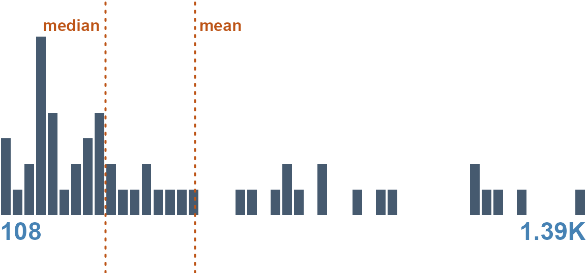

Data Reporting Functions
reporting-functions.RmdA Research Guide is not a monolith — it is assembled from small,
composable reporting functions, one stage at a time. This vignette opens
the hood and runs the whole pipeline on a single raw
vector: guess its type, measure it, report the numbers as a
table, and draw the visual. create_dgf() does exactly this
for every column of a dataset at once; here we do it for one, by
hand.
#> [1] 806.37 310.01 961.78 207.80 1390.73 766.73Stage 1 — guess the data type
Typing is the first move, and it comes from the companion package
formex. Hand it the vector (the column name is a useful
hint) and read the $route:
route <- formex::guess_data_type(v, name = "revenue")$route
c(data_type = route$data_type, semantic_type = route$semantic_type,
depth = route$depth, confidence = round(route$confidence, 2))#> data_type semantic_type depth confidence
#> "number" "measurement" "3" "0.98"A number, recognized from the values. The type is what selects every reporting function that follows.
Stage 2 — measure the column
The measurement functions take a variable name and a data frame and
return the profile as JSON — the exact payload datagoodr stores in the
DGF’s rg_* cells. The universal quality
counts:
df <- data.frame(revenue = v, stringsAsFactors = FALSE)
get_properties("revenue", df)#> [
#> { "STAT" : "Rows" , "VAL" : "60" , "PER" : "" },
#> { "STAT" : "Distinct" , "VAL" : "60" , "PER" : "(100.0%)" }
#> ]and the type-specific statistics (here, the numeric quantile ladder plus mean, skew, and kurtosis):
get_stats("revenue", df, "numeric")#> [
#> { "STAT" : "Minimum" , "VAL" : "55.91" },
#> { "STAT" : "Q - 05" , "VAL" : "107.08" },
#> { "STAT" : "Q - 25" , "VAL" : "207.71" },
#> { "STAT" : "Median" , "VAL" : "338.8" },
#> { "STAT" : "Mean" , "VAL" : "534.83" },
#> { "STAT" : "Q - 75" , "VAL" : "743.11" },
#> { "STAT" : "Q - 95" , "VAL" : "1,405.33" },
#> { "STAT" : "Maximum" , "VAL" : "2,100.88" },
#> { "STAT" : "Skew" , "VAL" : "1.44" },
#> { "STAT" : "Kurtosis" , "VAL" : "1.58" }
#> ]This JSON is the “inner” profile. Nothing about it is tied to how it will be shown — reporting is a separate stage.
Stage 3 — report the numbers as a table
To render, the profile is carried in a DGF and handed to a
dg_* reporting function, which parses the JSON and prints a
table. Build a one-column DGF and report the stats:
dgf <- create_dgf(df, file = tempfile("dgf"), open = FALSE)
dg_properties(dgf, "revenue") # the universal counts, as a tablePROPERTIES:
| STAT | VAL | PER |
|---|---|---|
| Rows | 60 | |
| Distinct | 60 | (100.0%) |
dg_stats(dgf, "revenue") # the numeric statistics, as a tableSTATS:
| STAT | VAL |
|---|---|
| Minimum | 55.91 |
| Median | 338.8 |
| Mean | 534.83 |
| Maximum | 2,100.88 |
| Skew | 1.44 |
| Kurtosis | 1.58 |
Stage 4 — create the visual
The graphic is chosen by type too: dg_graphic()
dispatches a number to the histogram renderer, reading the same stored
profile.
dg_graphic(dgf, "revenue", label = "")
Putting it together
Four stages — guess, measure, tabulate, visualize —
each a small function selected by the column’s type. A different vector
would route through different functions: a categorical column to
paste_treemap, a date to the calendar heat-map, free text
to the word cloud. That type-to-function mapping is itself a setting you
can inspect and change — see Report Aesthetics and
Customization.
create_dgf() runs stages 1–2 for every column and stores
the result; the Research Guide runs stages 3–4. Everything in this
vignette is what happens inside those two calls.